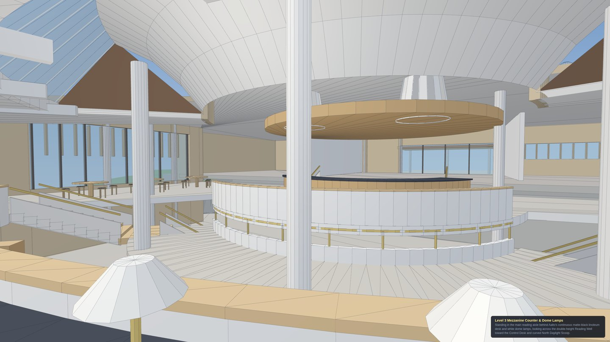
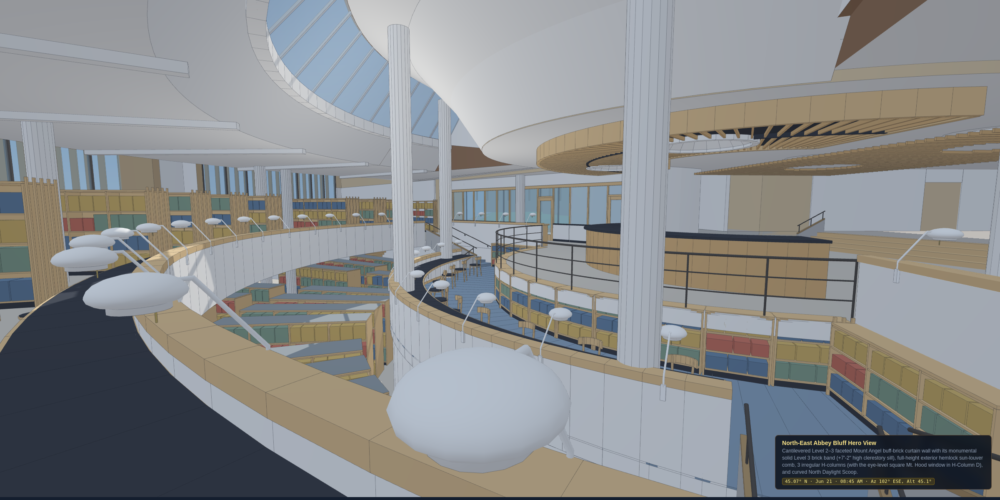
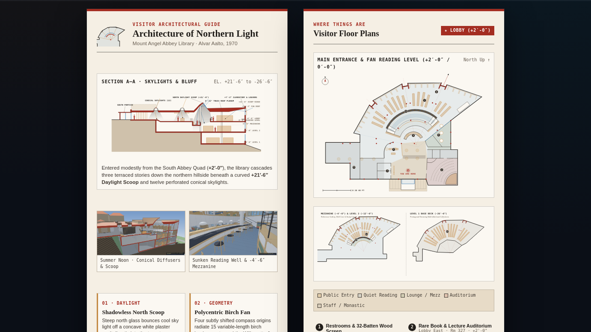

Alvar Aalto’s Library of Northern Light
On the hilltop of Mount Angel Abbey, Aalto’s library enters as a low brick pavilion on the quad, then fans down the north bluff in three terraced levels around a sunken reading well lit by a curved skylight.
This project rebuilds the library digitally from Aalto’s original drawings and photographs: a 3D model you can explore, with notes on how it was made.

Explore the Project
7 sections
3D Model
Walk the building in your browser: cut sections, peel layers and track the sun.
Open the model →
The Journey
Fr. Barnabas’s 1966 trip to meet Aalto: a map, the buildings he saw, and his hopes for the library.
Follow the trip →
Making the Model
How the drawings were traced, the geometry worked out, and the building put together.
Read the story →
Building with Code
How Python functions and IngeTrazo built the forms, with early passes and bugs caught along the way.
See the process →
Photo vs. Model
Real photographs side by side with matching views of the model.
Compare views →Blueprints
All 47 of Aalto’s original sheets: plans, sections, details and furniture.
Browse the sheets →
Visitor Guide
A rack card and lobby posters with floor plans and a section through the skylight.
See the guide →